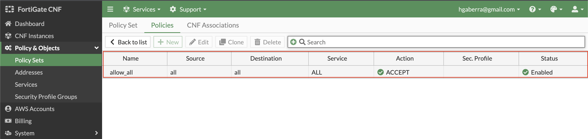
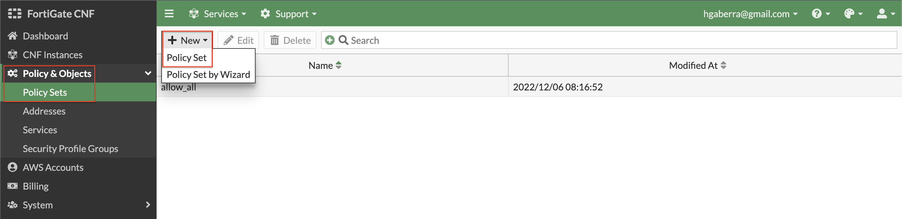
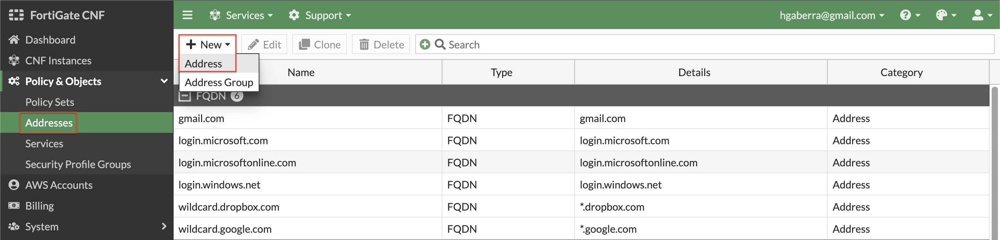
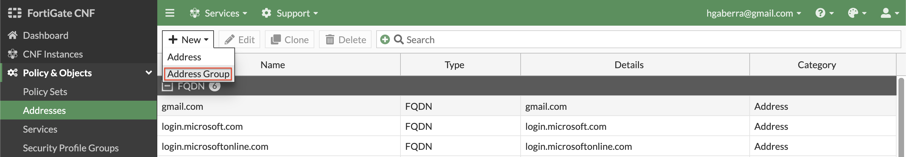
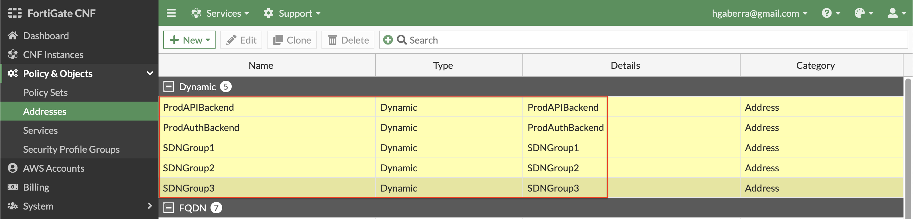
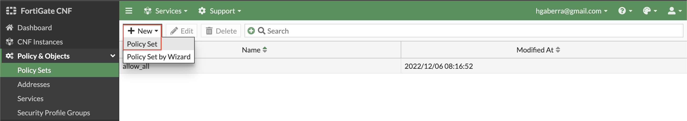
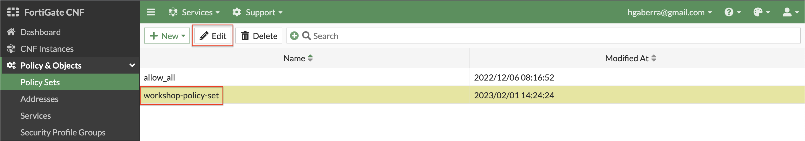
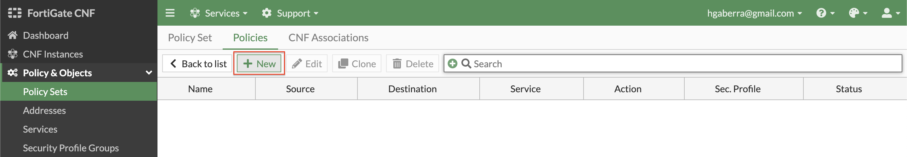
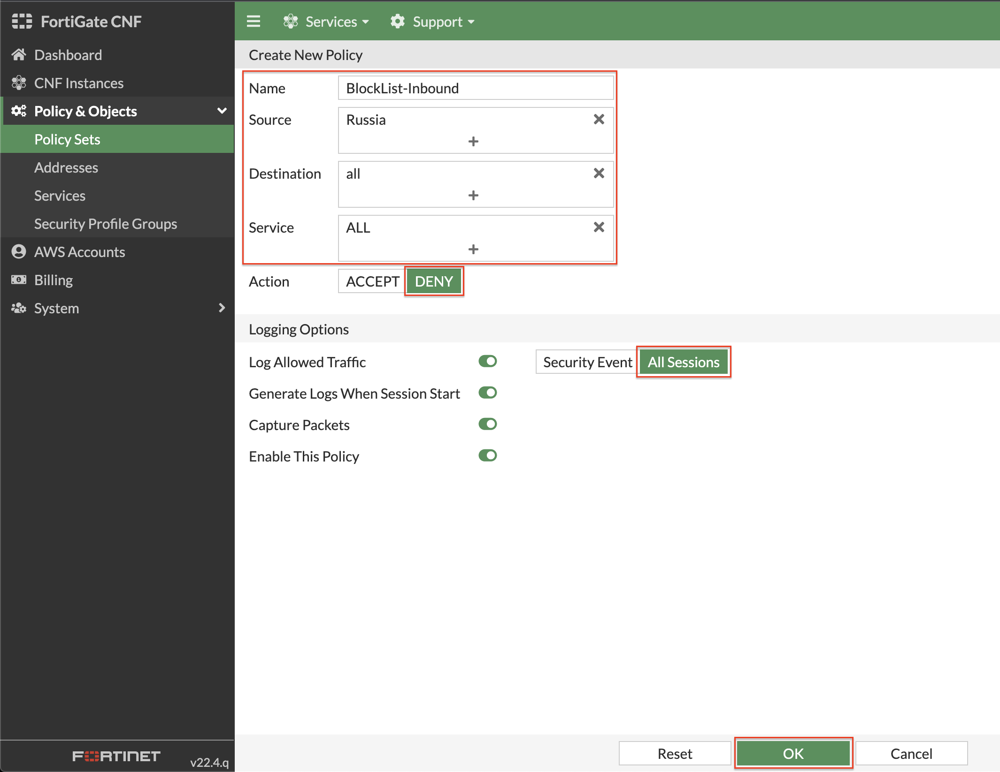
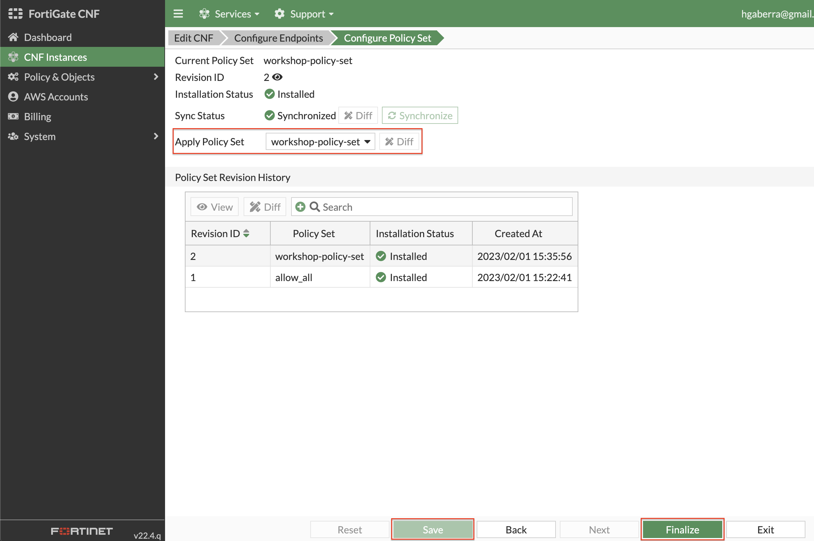

Task 4: Create a policy set and apply it to a FortiGate CNF Instance
-
- At this point, we are using the default allow_all policy set which allows all communication to be allowed without any restriction from a Layer 4 and Layer 7 perspective.

-
- To customize the actual L4 rules and L7 security profile groups applied, in the FortiGate CNF Console navigate to Policy & Objects > Policy Sets to create your own policy set. Simply click Create New, select Policy Set, and give your policy set a name.

-
- Before adding in L4 rules within the policy set, create a few simple address objects. Navigate to Policy & Objects > Addresses, click New, and Address. Then create each of the address objects below.
| Name | Type | IP/Netmask Value |
|---|---|---|
| ClassA | Subnet | 10.0.0.0/8 |
| ClassB | Subnet | 172.16.0.0/12 |
| ClassC | Subnet | 192.168.0.0/16 |
| GooglePublicDNS1 | Subnet | 8.8.8.8/32 |
| GooglePublicDNS2 | Subnet | 8.8.4.4/32 |
| AppPublicSubnet1 | Subnet | 10.1.1.0/24 |
| AppPublicSubnet2 | Subnet | 10.1.2.0/24 |


-
- Next, create an Address Group to include all the RFC 1918 class objects. On the same page, click New, and Address Group. Then create each the address object below.
| Name | Members Value |
|---|---|
| RFC-1918 | ClassA, ClassB, ClassC |


-
- In FortiGate CNF you can create different types of address objects to be more flexible and granular in your rules within your policy set. Create an FQDN based address object by clicking New, and Address. Select FQDN for Type, then create the address object below.
Note: This can be used for internal Application, Network, and even legacy Elastic Load Balancers (ie ALB, NLB, ELB) to dynamically resolve their private IPs.
| Name | Type | FQDN Value |
|---|---|---|
| ipinfo.io | FQDN | ipinfo.io |

-
- Geography based address objects are available in FortiGate CNF. This allows controlling traffic based on public IPs assigned to countries around the globe. These objects can be used as a source or destination object within policies used in a policy set. Create a geo based address object by clicking New, and Address. Select Geography for Type, then create the address objects below.
Note: The IP for the country or region is automatically determined from the Geography IP database which is provided by FortiGuard Servers on a recurring basis. For more granular control to applications (especially external), it is recommended to use URL or DNS filtering and even Application Control for L7 inspection.
| Name | Type | Country/Region Value |
|---|---|---|
| UnitedStates | Geography | United States |
| Russia | Geography | Russian Federation |

-
- Dynamic metadata based address objects are available in FortiGate CNF. This allows controlling of traffic based on things such as VPC ID, Auto Scale Group, EKS Cluster or Pod, and even Tag Name + Value pairs for a given AWS account and region. Create a dynamic based address object by clicking New, and Address. Select Dynamic for Type, then create the address objects below.
Note: This is using AWS API calls behind the scenes such as ec2:DescribeInstances, eks:ListClusters, eks:DescribeCluster, etc. For instances, these must be running to have their IP address(es) (public and or private IPs) returned.
Note: For each object, you will use the same values for these settings:
| Type | AWS Account ID | AWS Region |
|---|---|---|
| Dynamic | Workshop-AWS-Account-ID | us-east-2 |
Here is the list of dynamic objects to create:
| Name | SDN Address Type | Filter Value |
|---|---|---|
| ProdAPIBackend | Private | Tag.env=prod AND Tag.app-role=api AND Tag.app-tier=backend |
| ProdAuthBackend | Private | Tag.env=prod AND Tag.app-role=auth AND Tag.app-tier=backend |
| SDNGroup1 | Private | Tag.sdn-group=group1 |
| SDNGroup2 | Private | Tag.sdn-group=group2 |
| SDNGroup3 | Private | Tag.sdn-group=group3 |


-
- Now you will create a policy set to enforce L4 rules using the address objects you just created in the previous steps. Navigate to Policy & Objects > Policy Sets and click New, Policy Set. Give it a name and click Ok. You will be returned to the list of policy sets. Select your policy set and click Edit.



-
- Now you can create the policies listed below to control all directions of traffic within the example environment. Click New and create the policies listed below:
| Name | Source | Destination | Service | Action | Log Allowed Traffic |
|---|---|---|---|---|---|
| BlockList-Inbound | Russia | all | ALL | DENY | All Sessions |
| BlockList-Outbound | all | Russia | ALL | DENY | All Sessions |
| HTTPS-Inbound | UnitedStates | RFC-1918 | HTTPS | ACCEPT | All Sessions |
| ICMP-EastWest | RFC-1918 | RFC-1918 | ALL_ICMP | ACCEPT | All Sessions |
| AuthSharedServices-EastWest | ProdAPIBackend | ProdAuthBackend | HTTPS + RADIUS ACCEPT All Sessions | ||
| ICMP-Egress | RFC-1918 | UnitedStates | ALL_ICMP | ACCEPT | All Sessions |
| IPinfo-Egress | SDNGroup1 + SDNGroup2 + AppPublicSubnet1 + AppPublicSubnet2 | ipinfo.io | HTTPS | ACCEPT | All Sessions |


-
- In order to use this policy set, it must be applied to the deployed FortiGate CNF Instance. Navigate to CNF instances and select and edit the CNF Instance then click the Configure Policy Set bread crumb. In the Apply Policy Set, select your policy set then click Save then Finalize.

-
- This concludes this section.